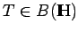
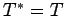
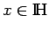
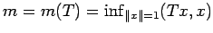
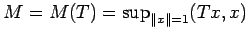
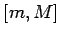
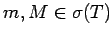

Inhalt Index DeskTop Bronstein

 Funktionalanalysis Adjungierte Operatoren in normierten Räumen
Funktionalanalysis Adjungierte Operatoren in normierten Räumen


Ein Operator  heißt selbstadjungiert, wenn . In diesem Falle ist für jedes  die Zahl (Tx,x) reell. Es gelten
und mit  und 
Das Spektrum eines selbstadjungierten (beschränkten) Operators liegt im Intervall , wobei  gilt.